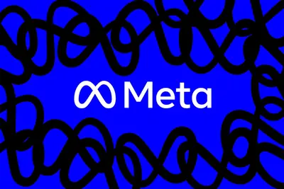
其他AI 每日新聞彙整
全部主題
其他
2 家媒體報導languagemetaremoves
Meta removes language that raised scraping and AI training concerns
A Meta spokesperson insisted that the updated terms did not reflect a change in the way Meta crawls the web.
metarobot
Meta 修改商业服务条款引发“用于训练 AI”争议，现已删除相关表述
IT之家 10 月 18 日消息，Meta 最近更新了其商业服务条款，声明其有权“使用来自 [企业账户] 域名、网页或 URL 的任何内容，以提供、开发、改进、研究、 训练 并维护”Meta 产品及服务的完整性。 IT之家注意到，接受 Nieman Lab 采访的法律专家指出，这是一项“引人注目的条款”，它可能赋予 Meta 抓取任何拥有 Meta 企业账户的内容发布商网站、 并利用相关内容训练其人工智能模型的权限 。 不过，Meta 发言人坚称，更新后的条款并不意味着 Meta 抓取网络的方式发生了改变。据 The Verge 报道， 目前该条款已被正
xaisamsungterafab
韩国半导体工程师指控特斯拉：施压三星压低 AI 芯片报价、索要敏感信息并挖角其人才
IT之家 10 月 18 日消息，据 Tweaktown 报道，一名韩国半导体工程师指控，特斯拉在与三星签订芯片代工协议时，试图争取极为优厚的条款：既要获取敏感的制造工艺信息、审计权限，同时还要求压低报价。这位在 X 平台账号 @TTHUEONE 发文的工程师还称，特斯拉的 Terafab 项目从三星位于得州泰勒的工厂挖走了大量员工。 这些指控出现前，埃隆 · 马斯克（Elon Musk）刚度过事务繁忙的一周。他公开称赞美光科技，称其“对未来存储芯片定价态度理性，其他厂商则存在漫天要价的行为”，这番话普遍被解读为暗指三星。他还暗示台积电有可能参与 Ter
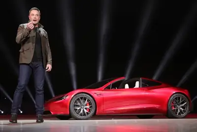
eimrobotpim
布局物理 AI：美光研发边缘推理内存 EIM，降低数据处理延迟并提高带宽
IT之家 10 月 18 日消息，据韩媒 The Elec 报道，美光正在推进面向物理 AI 的专用存储芯片 —— 边缘推理内存（Edge Inference Memory，EIM）的研发。 10 月 16 日，在首尔江南 COEX 举行的韩国半导体展（SEDEX 2026）专题论坛“驱动人形机器人的半导体”上，美光高管（常务）李哲（音译）表示：“自动驾驶、人形机器人、增强现实（AR）及虚拟现实（VR）等物理 AI 市场正在迅速崛起。我们正与核心客户紧密沟通，共同推进适配这一新兴市场的产品研发。” 据悉， EIM 能够高速处理 AI 推理所需的数据 ，其
microsoftwindowsrtx
RTX Spark Ignites Global Celebration as New Windows PCs Arrive
NVIDIA RTX Spark laptops are now available, bringing NVIDIA Blackwell RTX graphics, up to 128GB of unified memory and the full NVIDIA AI platform to slim, premium Windows PCs. Starting at $2,399, laptops from ASUS, Dell, HP, Lenovo, Microsoft and MSI bring powerful local AI, cont
workforceanthropicbecome
Anthropic says its workforce has become less junior and is spending more time in meetings
The composition of Anthropic’s workforce and the type of work getting done have changed significantly in the past year.

defaultanthropicreplit
Replit makes OpenAI its default over Anthropic, CEO says
Over the weekend, Masad clarified that OpenAI would replace Anthropic as its default model provider. Claude will still be available to customers on the platform.
- TechCrunch AI Replit makes OpenAI its default over Anthropic, CEO says
rtx5090geforce
英伟达否认 RTX 5090 停产传闻，承认供应链产能受限
IT之家 10 月 17 日消息，英伟达个人计算业务高级副总裁 Jeff Fisher 昨日在台北出席 RTX Spark 相关活动时回应了 RTX 5090 停产相关传闻，明确表示相关消息不属实。 他强调，这款显卡仍是英伟达非常重要的核心产品，后续将继续供货。但他也同时承认，当前供应链产能确实受到限制，英伟达正努力推动产品进入市场。 此前，消息人士 MEGAsizeGPU (@Zed__Wang) 10 月 10 日爆料称，英伟达将不再向 GeForce RTX 50 系列游戏显卡分配 GB202，并将原本用于该卡的 GB202 芯片转向 RTX PR
driveone12.88ray7
广汽埃安 Ray7 开启预售：华为 DriveONE 多合一电驱，12.88 万元起
IT之家 10 月 17 日消息，广汽埃安 Ray7 纯电轿车今日开启预售，共 5 款车型，预售价 12.88 万元起。 IT之家附价格信息如下： 530 后驱驾趣版 12.88 万元 530 后驱激光版 13.88 万元 702 后驱驾趣宁德版 13.88 万元 702 后驱激光宁德版 14.88 万元 702 后驱 EMB 激光宁德版 15.88 万元 该车提供 仲夏紫、闪电黄、月辉银、风暴红、熔岩灰、云舒白、热带蓝 车色，定位“大 5 米超级纯电轿车”，配备 3.6m 量子星环贯穿前后 LED 灯。 该车提供炽光竞驰、云纱暖米、极速赛道内饰，一体式
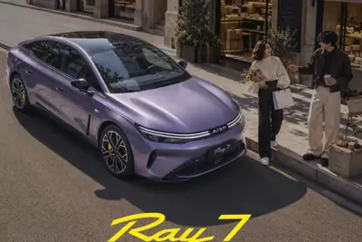
agentsgooglewebsites
Websites are closing their doors to AI agents
Autonomous agents are the hottest thing in AI. OpenAI, Meta, Google, Instinct, and others promise their agents can scour the internet on your behalf, doing anything from booking a dinner reservation and cleaning out your inbox to buying new shoes. But what happens when the rest o
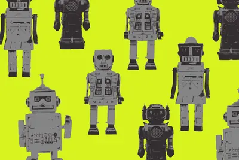
- The Verge AI Websites are closing their doors to AI agents
solarlegalplug-in
Plug-in solar is legal in these 10 states now – how it could save you money
So-called balcony solar setups are becoming legal across the US. Here’s the latest.
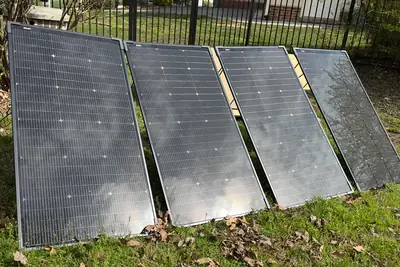
arcb70pro
华硕推出旗下首款英特尔 Arc Pro B70 显卡：32GB ECC 显存，AI 算力达 367 TOPS
IT之家 10 月 17 日消息，据 Wccftech 今日报道，华硕推出了旗下首款英特尔 Arc Pro B70 显卡，面向 AI 推理及工作站市场。华硕此前缺席了英特尔 Arc 独立显卡的多个世代，此次推出新品意味着其再次加入英特尔独立显卡产品阵营。 华硕这款产品名为 UGen Intel Arc Pro B70 32GB GDDR6，采用英特尔 X e 2 架构的 Big Battlemage GPU，配备 32GB GDDR6 ECC 显存、32 个 X e 核心和 256 个 XMX AI 引擎，INT8 AI 算力最高可达 367 TOPS，
10000huawei2026
边建设边运营：“鹏城云脑 Ⅲ”10000P 国产算力上线试运行
IT之家 10 月 17 日消息，10 月 15 日至 16 日，2026 世界算力网大会（WCNC 2026）在深圳举行。开幕式上，大科学装置“鹏城云脑 Ⅲ”的 10000P 国产算力正式上线试运行。 公开报道显示，鹏城云脑 Ⅲ 采用的是华为昇腾最前沿的 384 超节点架构，首期设备已于今年 3 月通电点亮，完全建成后算力规模将达到 16000P（IT之家注：合 16 EFLOPS）。 此次 10000P 算力先行投入运营，意味着这座规划中的国内单体规模最大智算设施进入“边建设、边运营”新阶段，在全部建成之前已开始向国产大模型训练与科学智能研究输出算力
74411.1126888
科大讯飞 AI 词典笔 X9 上架：内置 85 本词典、支持小初高 9 科知识查询，744 元
IT之家 10 月 17 日消息，科大讯飞现已在京东上架讯飞 AI 词典笔 X9，定价为 744 元，部分地区国补后低至 674.1 元。 该词典笔配备 3.48 英寸莱茵低蓝光护眼屏，配备 1100mAh 电池，内置 85 本正版词典及“五千万词库”。扫描响应时间低至 0.3 秒，并支持无网离线查词。其机器翻译能力通过了全国翻译专业资格考试评估，能够进行长难句的语法与结构剖析。 官方强调，该设备提供 11000 篇分级听力内容，覆盖幼儿至高中阶段。口语训练采用中高考同源技术进行音素级纠音，支持 AI 图文对话与蓝牙耳机连接。系统内置艾宾浩斯遗忘曲线以自
ps5qwen3.8-27b3.8
开发者将破解后的索尼 PS5 当作本地 AI 服务器：利用 GPU 加速运行 27B 参数 Qwen3.8-27B 模型，速度达 20.9 token/s
IT之家 10 月 17 日消息，据外媒 Wccftech 报道，开发者 abhi245y 基于资深 AI 工程师 Mert Cobanov 的 PS5LM（ llama.cpp 移植项目），开发了原生 GPU 应用 PS5LM Plus，让经过破解的 PS5 主机能够在本地运行 Qwen3.8-27B 等大型语言模型。 IT之家获悉，PS5LM 的早期版本主要依靠 CPU 运行模型，执行 27B 参数模型时，平均每分钟只能生成约 1 个 token。为提升性能，开发者 abhi245y 移植了 Mesa 开源项目中的 AMD RADV 驱动，并通过 V
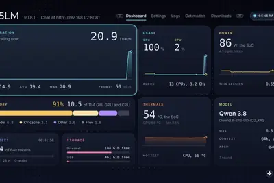
中国科学院院士鄂维南：未来民科是科研的主力，AI 时代每个有想法有能力的团队和个人都可以参与到科技创新中去
10 月 17 日，在光华思想力论坛上，中国科学院院士、北京大学讲席教授鄂维南表示，人工智能本质上是“数学 + 计算机工程”，将大幅降低科研门槛，推动“科研平权化”。“未来民科是科研的主力”，他预测，通过开放实验室和云服务，“每一个有想法有能力的团队和个人都可以参与到科技创新当中去”。 鄂维南指出，企业真正做生产时缺乏原始创新，只能在管理、价格等方面竞争，“内卷的根本原因是创新能力不够”。他认为，高端工业软件、高端机床数控系统目前受制于人，但“现在不但是可以比较短的时间内实现自主可控，甚至可以‘换道超车’”，可构建 AI 原生工业软件体系，“原则上几乎可
openai
OpenAI 纳维-斯托克斯方程证明方法被指与官方叙事不符：学界验证尚需数年，智能体贡献同样成谜
IT之家 10 月 17 日消息，OpenAI 今年 9 月公布了一份长达 166 页的纳维-斯托克斯方程（Navier–Stokes equations）相关证明，称其内部 AI 系统在约 88 小时内完成了对这一千禧年难题的求解。 不过，随着数学界进一步审查相关工作，研究人员开始对证明采用的方法、与已有研究的关系，以及大规模 AI 智能体究竟发挥了多大作用提出质疑。 数学家贡萨洛 · 曹-拉博拉（Gonzalo Cao-Labora）指出， OpenAI 可能自己都没看懂就急着发论文了 。 他表示，OpenAI 的证明细节与西班牙数学家迭戈 · 科尔
isnreadytackle
Why AI Isn’t Ready to Tackle Our Convoluted Genomes
The DNA inside our cells isn’t just a series of instructions, but something far more dynamic. Like scientists, AI models don't yet have the data to properly decode it.
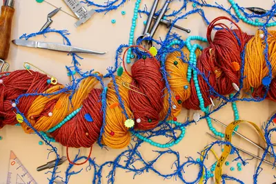
bytedanceyoutubetiktok
不禁 AI 但拒絕 AI 垃圾內容，YouTube、TikTok 等社群平台齊改規則
隨著生成式 AI 快速滲透創作流程，主流社群平台正加速調整規則，試圖在鼓勵創新與防堵低品質大量生成內容之間取得 […]
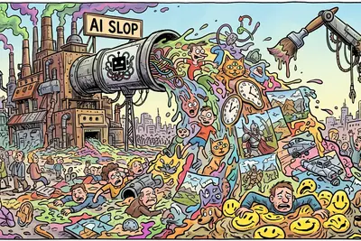
- 科技新報 TechNews 不禁 AI 但拒絕 AI 垃圾內容，YouTube、TikTok 等社群平台齊改規則
nvidiafunding400
最賺錢的時候押注下一步，黃仁勳帶領輝達再一次歷史性轉型
幾個月狂砸 400 億美元，輝達（NVIDIA）就這樣大剌剌在所有人注視下，又一次完成重要轉型。 過去幾個月， […]
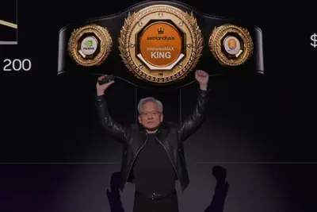
- 科技新報 TechNews 最賺錢的時候押注下一步，黃仁勳帶領輝達再一次歷史性轉型
agentichpeagent
Agentic AI 浪潮襲來！HPE 剖析企業 AI 轉型痛點與企業級 AI 工廠策略
隨著生成式 AI 迅速演進，企業 AI 應用正從傳統問答模式跨入目標導向的 Agentic AI（代理人 AI […]
- 科技新報 TechNews Agentic AI 浪潮襲來！HPE 剖析企業 AI 轉型痛點與企業級 AI 工廠策略
即使行為與人類無異，科學證實人們仍認為 AI 缺乏「真正意識」
隨著現代 AI 模型在對話、推理與情感模仿上越發精進，大眾開始擔憂：人類是否會被演算法迷惑，誤以為它們擁有真實 […]
- 科技新報 TechNews 即使行為與人類無異，科學證實人們仍認為 AI 缺乏「真正意識」
AI 泡沫疑慮升溫，彭双浪：成長將放緩、趨勢不會改變
友達光電今日舉辦成立 30 週年集團運動會，董事長彭双浪受訪時表示，人工智慧（AI）已成為不可逆的產業趨勢，儘 […]
- 科技新報 TechNews AI 泡沫疑慮升溫，彭双浪：成長將放緩、趨勢不會改變
AI 助攻效率與創意但「貧富不均」，高學歷與管理職還是最大贏家
美國最新研究指出，人工智慧（AI）開始明顯助益部分勞工，包括加速工作、激發創意與提升產出品質，但這些好處並未平 […]
- 科技新報 TechNews AI 助攻效率與創意但「貧富不均」，高學歷與管理職還是最大贏家
台積電亮眼財報背後，市場關注隱憂關鍵浮現
晶圓代工龍頭台積電公佈最新第三季財報，數據顯示由人工智慧（AI）浪潮推升的強勁需求遠超預期。第三季單季營收達4 […]
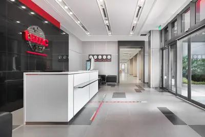
- 科技新報 TechNews 台積電亮眼財報背後，市場關注隱憂關鍵浮現
computeandrewhuberman
超越模型算力，神經科學專家：AI 終極戰場在「非侵入式讀寫大腦」
史丹佛大學神經科學家安德魯·胡貝爾曼（Andrew Huberman）近日在 Podcast 節目中表示，人工 […]
- 科技新報 TechNews 超越模型算力，神經科學專家：AI 終極戰場在「非侵入式讀寫大腦」
tokenopenaichatgpt
魏哲家籲多用 AI，Token 消耗越多、台積電越受惠
台積電董事長魏哲家 16 日出席台積電前技術長胡正明新書發表會，他分享自己使用 ChatGPT 準備致詞稿的經 […]
- 科技新報 TechNews 魏哲家籲多用 AI，Token 消耗越多、台積電越受惠
showllmspeedfeel
Show HN: Llmspeed – feel how fast a local LLM runs before you buy the hardware
Article URL: https://llmspeed.dev/ Comments URL: https://news.ycombinator.com/item?id=50127979 Points: 238 # Comments: 76
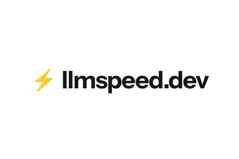
hbmssdfunding
大摩記憶體與 AI 供應鏈展望，HBM 與 SSD 合約價飆升推動算力與網路列投資首選
外資摩根士丹利（Morgan Stanley；大摩）最新研究報告指出，受惠於AI需求推動與產能排擠效應，記憶體 […]
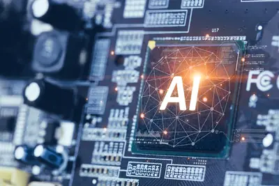
- 科技新報 TechNews 大摩記憶體與 AI 供應鏈展望，HBM 與 SSD 合約價飆升推動算力與網路列投資首選